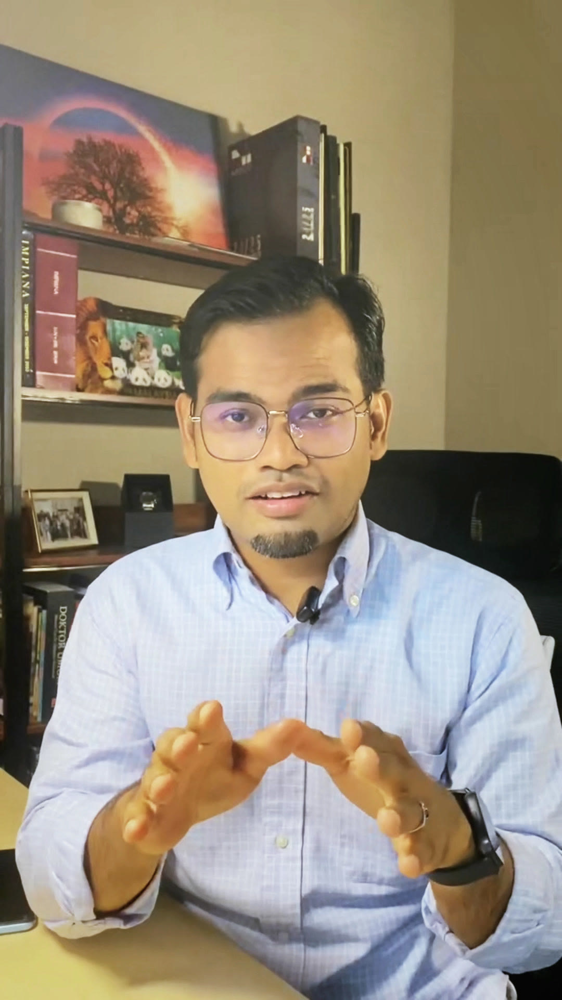
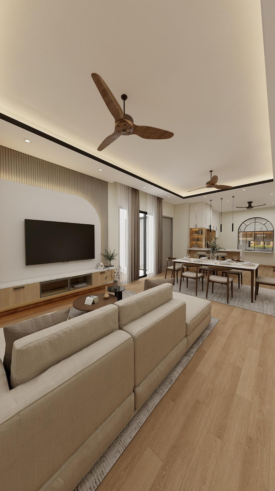
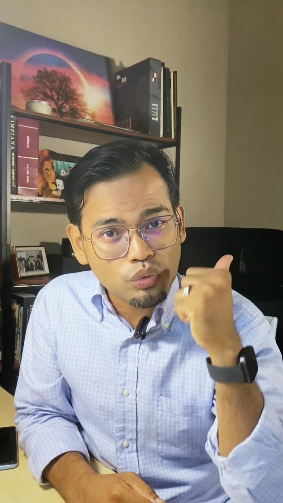
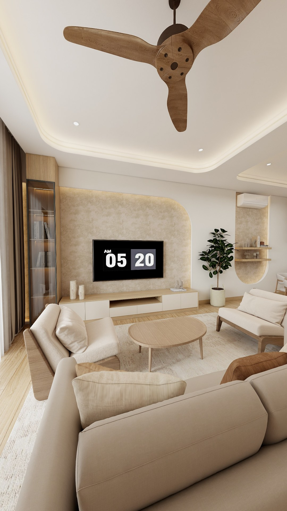
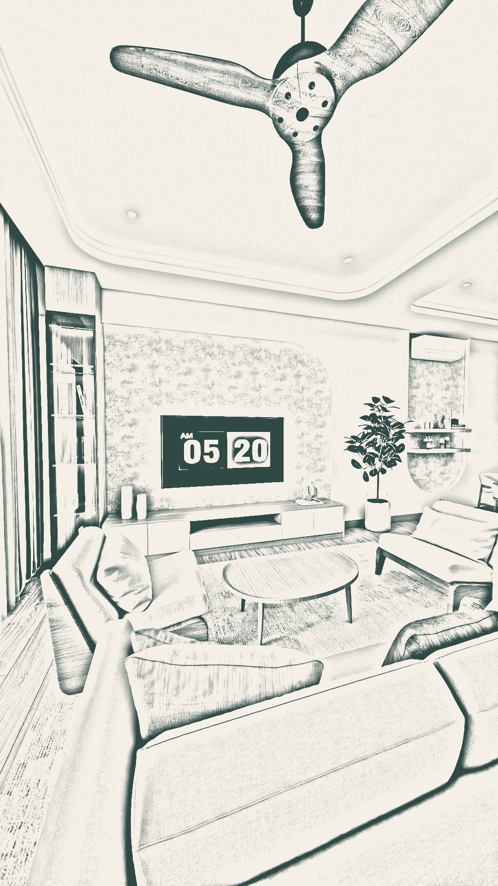

Fi-K Studio · CFik019 · cover 1080×1920
Tiga arah berbeza. Wajah diambil dari video sendiri (sudah di-grade), latar dari rekaan 3D Fi-K. Hidupkan “Potongan grid IG” untuk tengok bahagian yang masih nampak di profil Instagram (3:4). Semua teks penting diletak dalam zon tu.



Terus panggil sasaran, kemudian larangan yang buat orang berhenti scroll. Rumah impian di atas koyak ke wajah kau, sama dengan babak koyak dalam video.

Paling tajam dari segi kesakitan: wang. Wajah kau dengan gerak ibu jari ke belakang, tanpa latar rekaan, jadi fokus 100% pada ayat.


LakaranRekaan 3DPaling premium dan paling “jenama”: lakaran bertukar jadi rekaan 3D, terus tunjuk servis Fi-K. Hook lebih lembut, sesuai untuk penonton yang dah kenal Fi-K.